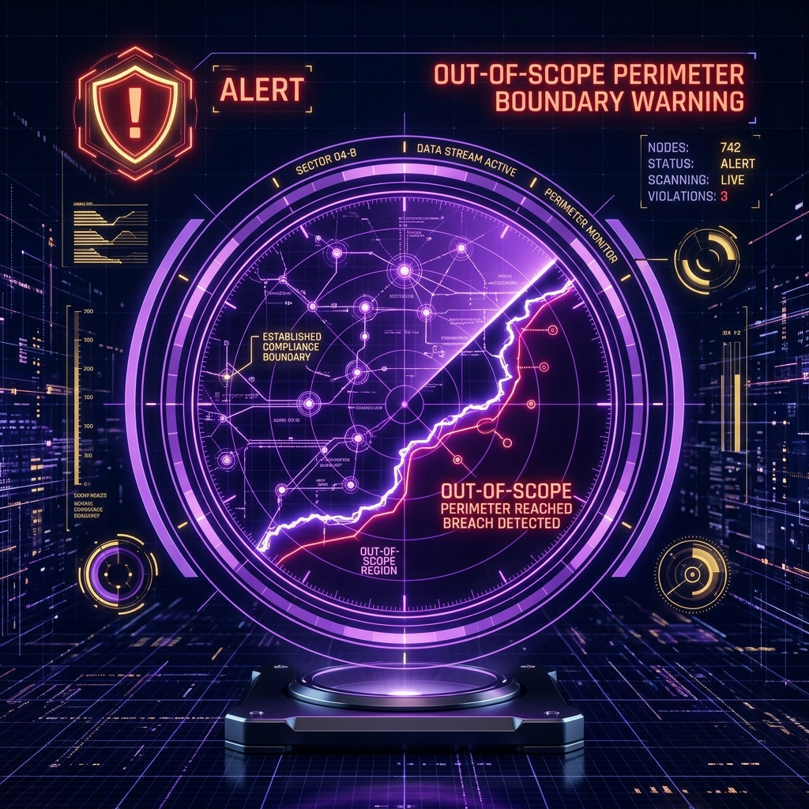

Error 404 • Page Not Found
Perimeter Out-of-Scope
Auto-Recovery Online
This page appears to be out of compliance
The resource you're looking for doesn't exist or has been moved. Let's get you back to an environment we've fully audited.